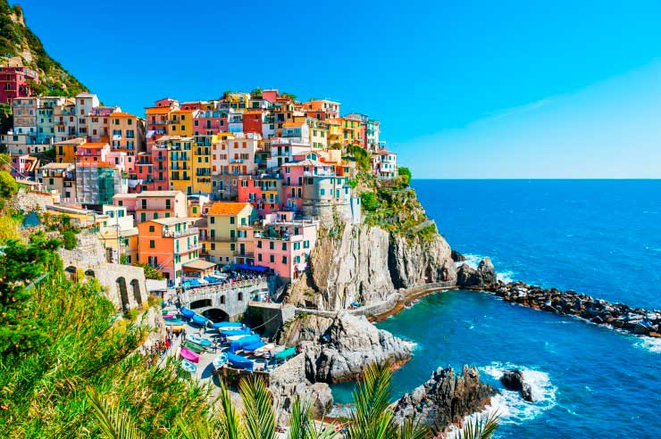
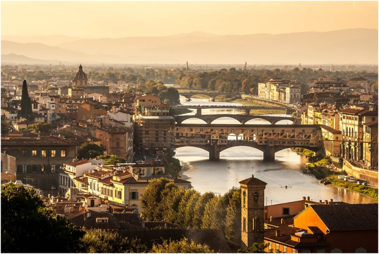

COSTA AMALFITANA
Com uma das estradas mais bonitas da Europa, a Costa Amalfitana é um pedaço do paraíso e o destino certo para quem gosta de praias, histórias e lugares charmosos. Sua costa, cercada por casas e banhada por um incrível mar cristalino, faz qualquer um se apaixonar. Ao todo são 50 km de extensão divididos por seus vilarejos, como Positano e Malfi, que são encantadores. Vale a pena a visita!

CINQUE TERRE
Cinque Terre é o nome dado a cinco vilarejos de pescadores localizados em uma encosta banhada pelo mar Mediterrâneo. O que faz do destino ser tão especial é o seu charme e a simplicidade, que se unem com a paisagem paradisíaca, criando um dos destinos mais incríveis da Itália e de toda Europa. O local é um Parque Nacional Italiano tombado pela UNESCO e um ponto turístico que atrai turistas que buscam destinos diferentes dos tradicionais.

FLORENÇA
Principal cidade da Toscana, Florença é um verdadeiro oásis quando o assunto são construções imponentes e passeios incríveis – não é pra menos que o destino recebe o título de uma das cidades mais importantes do mundo. São construções, igrejas, lojas e restaurantes que encantam qualquer um. Caso esteja pensando em fazer um tour pela região, use a cidade como ponto de partida – é possível visitar muitos lugares dessa lista fazendo um bate e volta!